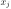
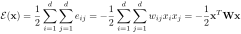

Next: Perceptron Network Up: ch10 Previous: Hebbian Learning
The Hopfield network
is a supervised method, based on the Hebbian learning rule. As a
supervised method, the Hopfield network is trained based on a set
of  patterns in dataset
,
where each data point
is a d-dimensional
binary vector containing
,
representing one of different of patterns of interest. Once the
network is completely trained, a weight matrix
patterns in dataset
,
where each data point
is a d-dimensional
binary vector containing
,
representing one of different of patterns of interest. Once the
network is completely trained, a weight matrix  of the network
is obtained in which the patterns are stored. Given an input
of the network
is obtained in which the patterns are stored. Given an input
 , an iterative computation is carried out until convergence,
when one of the pre-stored complete pattern that most closely resemble
the input is produced as the output. The Hopfield network
can therefore be considered as an auto-associator (a content addressable
memory), by which a pre-stored pattern can be retrieved based on its
association to the input pattern established by the network.
, an iterative computation is carried out until convergence,
when one of the pre-stored complete pattern that most closely resemble
the input is produced as the output. The Hopfield network
can therefore be considered as an auto-associator (a content addressable
memory), by which a pre-stored pattern can be retrieved based on its
association to the input pattern established by the network.
Structurally, the Hopfield network is a recurrent
network, in the sense that the outputs of its single layer of  nodes are fed back to these nodes in an iterative process.
nodes are fed back to these nodes in an iterative process.

The training process is essentially the same as the Hebbian learning,
except here the two associated patterns in each pair are the same
(self-association). The weight matrix of the network is obtained as
the sum of the outer-products of the patterns to be stored:
| (20) |
| (21) |
Once the weight matrix is obtained by the training process,
the network can be used as a self-associator. When an input pattern
is presented to the network, the outputs of the network are
updated iteratively and asynchronously, one randomly
selected node at a time:
| (22) |
 of the ith node
before and after the nth iteration, respectively. As shown below, this
iteration will always converge to one of the pre-stored patterns.
of the ith node
before and after the nth iteration, respectively. As shown below, this
iteration will always converge to one of the pre-stored patterns.
We first define the Energy function of any two nodes and 
of as
| (23) |
nodes in the network as the sum
of all pair-wise energies:
|  | (24) |
The interaction between these two nodes is summarized below:
| (25) |
to stay at the same state in the iteration.
to stay at the same state .
from its previous state to .
from its previous state to .
and , i.e., they tend to remain unchanged, and high
energy corresponds to an unstable interaction, i.e., they tend to change
their states. As the result, low total
corresponds
to more stable condition of the network, while high
corresponds to less stable condition.
We further show that the total energy
always decreases
whenever the state of any node changes. Assume has just been changeed,
i.e.,
( but
), while
all others remain the same
. The
energy before changes state is
 |
|||
|
| (26) |
| (27) |
 , we have
and
.
, we have
and
.
 , but
and
, but
and
 , we have
and
.
, we have
and
.
 is always
true throughout the iteration, we conclude that
will
eventually reach one of the minima of the energy landscape, i.e.,
the iteration will always converge.
is always
true throughout the iteration, we conclude that
will
eventually reach one of the minima of the energy landscape, i.e.,
the iteration will always converge.


We further show that each one of the pre-stored patterns corresponds
to one of the minima of the energy function. The energy function
corresponding to any can be written as
| (28) |
different (ideally orthogonal to) from any of the stored
patterns, all terms of the summation will be small (ideally zero).
But if is the same as any one of the stored patterns, their
inner product reaches maximum, causing the total energy to be minimized
to reach one of the minima. In other words, the patterns stored in the
network correspond to the local minima of the energy function. i.e.,
these patterns become attractors.
Note that it is possible to have other local minima, called spurious states, which do not represent any of the stored patterns, i.e., the associative memory is not perfect.